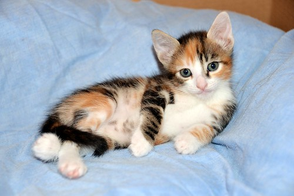

Mis gatitos
Migato amarillito es el más bonito del mundo,
Mi gatita parchada es la más lista del mundo,
Mi gatita ralladita gris es la más linda del mundo.


Galeria de gatitos
Galeria
Que les gusta hacer a mis gatos
- Salir al patio
- Comer mucho
- Jugar con pirrus
- desordenar la cama
- morder cables
- dormir en mi cobija
- despertar temprano
Que no le gusta a mis gatos
- Que los deje solos
- Que no les haga caso
- Que no tengan comida humeda
- Que su agua no sea fresca